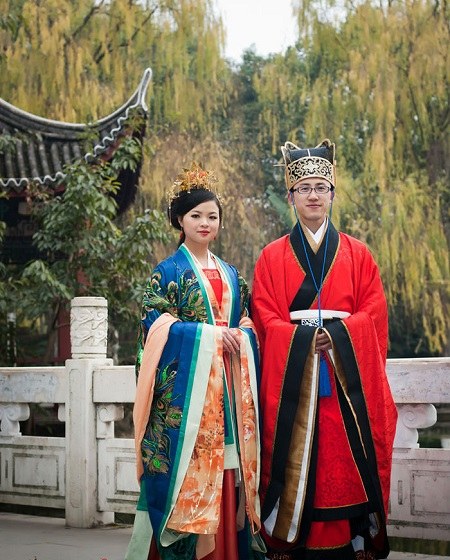

汉族

汉族是中国的主体民族，是上古时期黄帝和炎帝部落的后裔，炎黄子孙。
“汉”原指天河、宇宙银河，《诗经》云：“维天有汉，监亦有光。”
汉族旧称汉人是因中国的汉王朝而得名，汉朝以前称“华夏”或“诸夏”。
无论是在政治、军事、哲学、文学、史学、艺术等诸多方面，还是在自然科学领域中，汉族都创造了许多辉煌的业绩。
汉族自古对各种宗教信仰采取兼容并蓄的态度。天命崇拜和祖先崇拜是汉族宗教的主要传统观念。
几千年来，提倡以仁为中心，重视伦理教育，由孔子、孟子思想体系形成的儒家学说对汉族产生着深刻的影响。
汉族历来以勤劳、富于创造精神著称。汉族历史上的经济是以农业为主，兼营家庭副业，是一种典型的男耕女织的自然经济。
汉族的农业生产在历史上素来发达，尤其以水利灌溉和精耕细作著称于世，汉族的手工业也有相当高的发展水平。
而随着中国历史的变迁，以及外族入侵和躲避战乱等因素，汉族也发生了大规模迁移，一直在从中原地区向南迁移。
客家人继承了当时中原汉人的文化传统，比如说古语，风俗习惯也有历史痕迹。